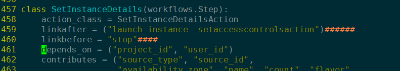
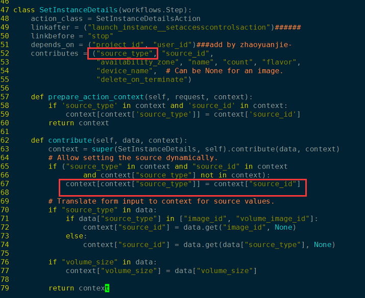
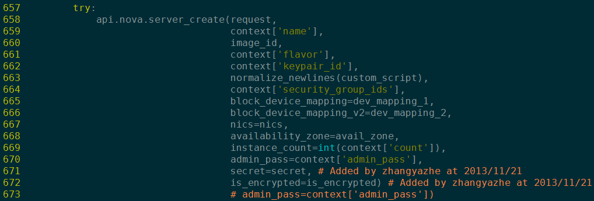

11. horizon启动虚拟机分析¶
Note
本篇文章分析OpenStack通过horizon启动虚拟机的流程。
基于OpenStack Juno版本!
11.1. 步骤¶
URLs.py URL映射

启动虚拟机URL映射
启动虚拟机workflow

View给workflow传递初始值
根据
horizon.workflow知识，get_initial()函数为LaunchInstance提供初始数据user_id和project_id. 那么只要后LaunchInstance的Action类 depends_on 这两个字段，该两个字段就可以直接使用！LaunchInstance的每一个Step都 depends_on 了这两个字段！depends_on 字段
接下来，在workflow中，一共有五个steps，其中，第一个步骤设置permissions 而进行隐藏。它的主要作用是贡献两个字段让后面的步骤进行依赖，从而对后面的steps进行校验。
下面有一个单独小节，说明启动虚拟机和workflow中的一些要点。
{kind=link}
11.1.1. 启动虚拟机workflow¶
启动虚拟机工作流中，五个steps中第一个通过设置permissions进行隐藏，它的主要 作用是贡献两个字段让后面的步骤进行依赖(depends_on)，从而对后面的steps中Action(表单)数据进行校验。
每一个step都可以贡献数据(贡献的数据对workflow的handle函数可见。)。其中，从action表单中定义的 字段自动可见，但是其他字段，需要通过contribulte函数手动添加到context 字典中。
如：SetInstanceDetails步骤贡献了source_type字段，但是该字段在SetInstanceDetails Step 的action类SetInstanceDetailsAction中并没有定义，需要在contribute函数中手动更新。
contribute函数手动添加非在action中定义的contributions
Action父类有一个_populate_choices方法，会调用所有的”populate_%s_choices”函数，所以Action类中 “populate_%s_choices” 函数的作用是动态获取下拉列表可供选择的选项数据。

Action 类的_populate_choices方法

“populate_%s_choices” 系列函数
调用handle方法。首先会调用workflow的所有steps的Action类的handle方法，workflow类的handle方法最后调用。
另外，在每一个step中列出的所有”contributes=”和”depends_on=”字段都是可用的, 我们可以通过handle方法的第三个字典参数引用之。

workflow 的handle方法
调用openstack_dashboard api函数创建虚拟机：
调用api创建虚拟机
经过这一步之后， novaclient 把创建虚拟机的一系列参数，封装成一个 HTTP 请求。 然后向
nova-api发起请求！
{kind=link}
{kind=link}
未完待续……